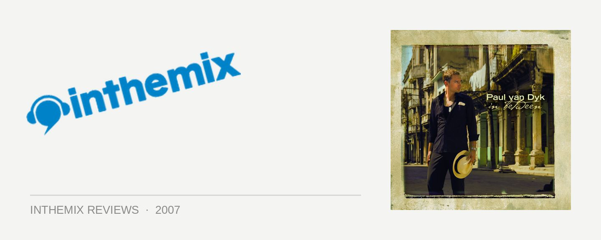

Paul van Dyk - In Between
The phrase ‘God is a DJ’ is a pretty hackneyed one: so out of date it’s almost embarrassing, it pretty much went out the window when dance came of age earlier in the decade. After all, DJing is a craft. Shouldn’t the producers be the ones getting the credit for actually making the music? But we can make an exception when we’re talking about Paul van Dyk: he’s so revered for his ability to whip a crowd into a manic, screaming frenzy whenever he gets behind the decks that it’s not that much of a stretch to label him as divine. And when it comes to his reputation as a producer, he aint half bad either. As he prepares to land in Australia for an series of intimate club dates, he’s just dropped his latest studio album In Between, in which delivers on every last bit of promise we heard when he first began making EDM back in the early 90s.
ITM recently spoke to PVD about his new album, and something that really left an impression was his talk about creating ‘tension’ in music. It’s the contrasting of light and dark, of finding the point of difference across different types in music and then mashing them together to create a response in the listener. You can hear this ‘tension’ at work at all times on In Between and it’s what makes it work so well as an album. After kicking things off with the cruisy breaks and chilled vibes of Haunted, this ‘tension’ is out in full force with the album’s first single White Lies. On the surface it’s a fairly poppy dance tune, not least because of the guest vocals from Pussycat Doll Jessica Sutta. Listen a little more carefully though and you’ll notice the kick is a lot stronger than what you’d hear a typical ‘pop’ release, and the chorus contrasts with the electro synthline rolling in the background, as well as the Spanish guitar that rears its head when the tune bottoms out into the breakdown. And we hear it again in Complicated: the thick 303 bassline fools you into expecting a light, throwaway dance tune, but that’s before the strings and vocals build it into something that’s genuinely emotive and haunting, an eight-minute epic no less.
The album’s first really euphoric moment comes with Get Back, one of the many collaborations on the release and on this occasion with Alex M.O.R.P.H. There’s the classic melodic breakdown and soft female vocals that send shivers down your spine, but that’s before it picks you up and pummels you into a bangin’ kickdrum and a tough-as-nails bassline. And similarly, the guitar work and vocals on Talk in Grey suggest a rock song in the vein of something from Coldplay or U2, but the electronic base on which the track is built is pure progressive house. It’s unpredicatable to the extreme, but it’s almost futile trying to highlight the album’s most exciting points because there’s such a variation in the sounds and emotions. Every new track brings a surprise, as well as a change in pace. And with the whole album sequenced like a mix CD, with the energy flowed in the same manner, the end result is that you’re held gripped for the entire journey. As a whole experience, In Between is more than the sum of its parts.
If you’ve listened to PVD’s Essential Mix from Global Gathering in July, then you might have heard a fair whack of these tunes already. But while they clearly had a rather large impact in that setting (listen to the screams from the crowd for evidence), it’s surprising how well they translate to a loungeroom setting. While the sound and production is ‘big’ enough to take on the huge sound systems and there’s more than a few dancefloor anthems ( New York City might just turn out to be one of the year’s biggest trance bangers), it’s still intricate and detailed enough to grip you through your home stereo. There’s a sophistication on display that goes a lot further than what we hear on a standard 12” club release, and while the musical ideas are all extremely well formed, they go well beyond a single hook or exciting buildup.
PVD has never been too fond of the term ‘trance’. And while it’s hard to argue you wouldn’t loosely define his music as that, there sure is a whole lot of pap out there that carries the same tag, so fair enough that he would want to distance himself from that. So can we call what’s on In Between trance? That depends on what perceptions you attach to the label. If you think of trance as full of sugary melodies, predictable structures and as something that hasn’t really moved forward since the Gatecrasher glory days then nope, you won’t hear much of that here. But if you see trance as something that’s dynamic, varied and always seeking to push the boundaries and evolve then yes, this is trance. Hell yeah.
When trance veteran Matt Dary toured Australia earlier this year, he talked of exploring everything but trance when putting together an artist album. He claimed trance producers aren’t ever able to make their music translate into the album format; and for the most part he’s right, because time after time we’ve seen dependable names deliver disappointments when they try their hands at it (i’m looking at you, Armin van Buuren). But trust Paul van Dyk to break the mold; a much better album than the lacklustre Reflections and on par with 2000’s epic Out There and Back, there’s every chance that In Between is the most realised, accomplished and just plain excellent trance album that’s ever hit the shelves. All bow down to the deity, because he deserves every last bit of hero worship that he gets.
Excited about PVD’s upcoming tour of Australia? Check out the full coverage page HERE.